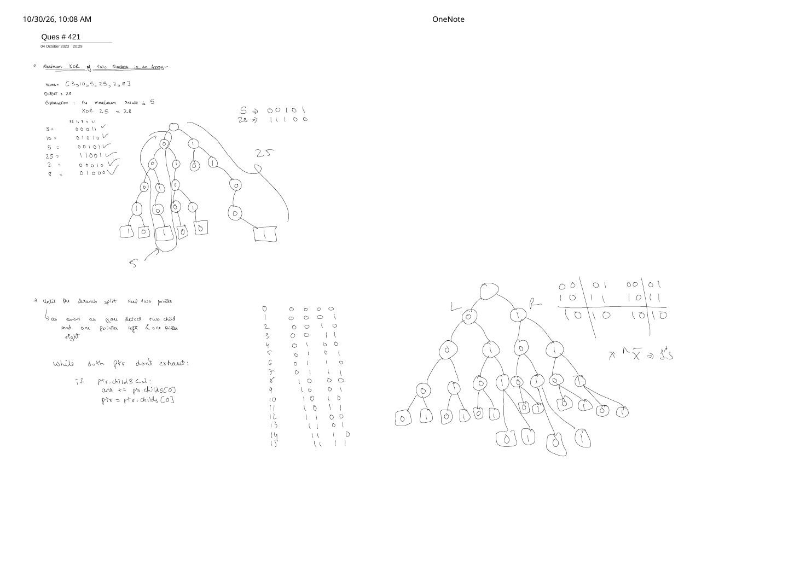

Maximum XOR of Two Numbers in an Array (LeetCode 421)
Expanded from handwritten competitive coding study note: 09_Ques_421.pdf
While Striver Lecture 6 maximizes $A \oplus B$ across two separate arrays, LeetCode 421 (Maximum XOR of Two Numbers in an Array) draws both numbers from a single array nums ($0 \le i \le j \lt N$). Beyond working through the classic 5-bit Binary Trie trace on [3, 10, 5, 25, 2, 8] ($5 \oplus 25 = 28$), 09_Ques_421.pdf derives a remarkable two-pointer split-subtree algorithm (L & R) that walks the Binary Trie once without re-querying every element from the root!
1. Single-Array Formulation & Incremental Insertion
LeetCode 421 — Maximum XOR of Two Numbers in an Array
Given an integer array nums of length $N$ ($1 \le N \le 2 \cdot 10^5$, $0 \le \text{nums}[i] \le 2^{31} - 1$), return the maximum result of nums[i] ^ nums[j] where $0 \le i \le j \lt N$.
- Why self-pairing ($i = j$) never corrupts the answer: For any $x$, $x \oplus x = 0$. Since every pairwise XOR of non-negative integers is $\ge 0$, having $x$ already inside the Trie can at worst yield $0$ (which is actually required when $N = 1$, where $i = j = 0$ gives
nums[0] ^ nums[0] = 0!). - Single-Pass Incremental Trick: Instead of inserting all $N$ numbers and then querying all $N$ numbers ($2$ passes), insert
nums[0]first, and for each $k = 1 \dots N-1$, computeans = max(ans, trie.getMax(nums[k]))before callingtrie.insert(nums[k])! Every unordered pair $(i, k)$ with $i \lt k$ is tested at the exact momentnums[k]arrives.
2. Handwritten 5-Bit Trace on nums = [3, 10, 5, 25, 2, 8]
In the top-left of 09_Ques_421.pdf, all six numbers are written in 5-bit binary (column weights $16, 8, 4, 2, 1$) and inserted into a depth-5 Binary Trie:
nums[i] |
5-Bit Binary (16·8·4·2·1) | Greedy Walk When Querying $x = 25$ ($\texttt{11001}_2$) |
|---|---|---|
| $3$ | 00011 | Bit 4 ($16$): $25$ has 1 $\to$ want 0 $\to$ exists! (ans += 16, go left 0) |
| $10$ | 01010 | Bit 3 ($8$): $25$ has 1 $\to$ want 0 $\to$ exists under 0! (ans += 8, go left 00) |
| $5$ | 00101 | Bit 2 ($4$): $25$ has 0 $\to$ want 1 $\to$ exists under 00! (ans += 4, narrow to 001 = $\{5\}$) |
| $25$ | 11001 | Bit 1 ($2$): $25$ has 0 $\to$ want 1 $\to$ missing under 001; forced to 0 (+0) |
| $2$ | 00010 | Bit 0 ($1$): $25$ has 1 $\to$ want 0 $\to$ missing under 0010; forced to 1 (+0) |
| $8$ | 01000 | Result: $5 \oplus 25 = \texttt{00101}_2 \oplus \texttt{11001}_2 = \texttt{11100}_2 = 16 + 8 + 4 = \mathbf{28}$! |
09_Ques_421.pdf: leaf 5 (00101) on the left and leaf 25 (11001) on the right diverge at bit $4$ and keep opposite bits across bits $4, 3, 2$ to reach $28$ (11100).3. Deep Dive: The Handwritten Split-Pointer (L & R) Tree Algorithm
Look at the bottom half of 09_Ques_421.pdf—there is a full 4-bit binary tree (0 = 0000 through 15 = 1111), two pointers labeled L and R, a $2 \times 2$ child-availability table, and the note:
"Until the branch split keep two pointer $\to$ as soon as you detect two child, send one pointer left & one pointer right."
Why is this geometric view so powerful, and how do we handle all child combinations cleanly?
- Before the first split (
L == R): Every number innumsshares the exact same leading bits, so only one child (0or1) exists. Every pair in the array produces $0$ at these bit positions! The instant a node has bothch[0]andch[1], the globally optimal pair must pick one number fromL = ch[0]and one fromR = ch[1](securing $+2^{\text{bit}}$). - After the split (
L != R) — The $2 \times 2$ Child-Availability Cases:- Case A (At least one opposite pair exists): Check
(L->ch[0], R->ch[1])and(L->ch[1], R->ch[0])(matching $x \oplus \bar{x} = \texttt{11\dots1}_2$ in the scan!). Notice that if both opposite pairs exist—for example in the full 4-bit tree0..15drawn on the bottom right—a single linearwhileloop cannot guess whether(L->0, R->1)or(L->1, R->0)wins at lower bits, so we recurse on the valid opposite pair(s) and take theirmax! - Case B (Zero opposite pairs exist): Then
LandRonly have a matching child—either(L->ch[0], R->ch[0])or(L->ch[1], R->ch[1])(it is mathematically impossible for both same-bit pairs to exist without an opposite pair also existing!). Contribute $+0$ at this bit and recurse on that single matching pair.
- Case A (At least one opposite pair exists): Check
Disjoint-Node Linear-Time Proof: Why maxXorPair(L, R, bit) Is $O(\text{Trie Nodes})$!
Wait—if Case A can make two recursive calls—(L->0, R->1) and (L->1, R->0)—doesn't recursion blow up to $O(2^{31})$? No! Look at the four child subtrees passed down:
L->0, L->1, R->0, and R->1 are four pairwise disjoint subtrees of the Trie! By induction on depth, every Trie node across the entire tree participates in at most ONE (L, R) call! That means maxXorPair(root, root, 30) visits each node at most once—actually doing less work than querying all $N$ numbers separately from root!
4. C++ & Python Implementations (All Three Paradigms)
Non-negative 32-bit signed integers satisfy $0 \le \text{nums}[i] \le 2^{31}-1$, so bit $31$ (the sign bit) is always $0$—meaning iterating from bit $30$ down to $0$ saves one level at the root!
#include <bits/stdc++.h>
using namespace std;
// Paradigm 1: Single-Pass Incremental Binary Trie (Standard Interview Solution)
class SolutionIncrementalTrie {
struct Node {
int ch[2] = {-1, -1};
};
public:
int findMaximumXOR(vector<int>& nums) {
vector<Node> pool(1); // Contiguous arena avoids `new` overhead!
auto insert = [&](int x) {
int cur = 0;
for (int b = 30; b >= 0; b--) {
int bit = (x >> b) & 1;
if (pool[cur].ch[bit] == -1) {
pool[cur].ch[bit] = (int)pool.size();
pool.emplace_back();
}
cur = pool[cur].ch[bit];
}
};
auto query = [&](int x) {
int cur = 0, ans = 0;
for (int b = 30; b >= 0; b--) {
int bit = (x >> b) & 1;
int opp = 1 - bit;
if (pool[cur].ch[opp] != -1) {
ans |= (1 << b);
cur = pool[cur].ch[opp];
} else {
cur = pool[cur].ch[bit];
}
}
return ans;
};
int maxXor = 0;
insert(nums[0]);
for (size_t k = 1; k < nums.size(); k++) {
maxXor = max(maxXor, query(nums[k]));
insert(nums[k]);
}
return maxXor;
}
};
// Paradigm 2: Handwritten Split-Pointer (L & R) Disjoint-Subtree Recursion
class SolutionSplitPointers {
struct Node {
int ch[2] = {-1, -1};
};
vector<Node> pool;
int maxXorPair(int L, int R, int b) const {
if (L == -1 || R == -1 || b < 0) return 0;
if (L == R) {
int c0 = pool[L].ch[0], c1 = pool[L].ch[1];
if (c0 != -1 && c1 != -1) {
// First split! Send L left (0) and R right (1)
return (1 << b) + maxXorPair(c0, c1, b - 1);
}
int only = (c0 != -1) ? c0 : c1;
return maxXorPair(only, only, b - 1);
}
int l0 = pool[L].ch[0], l1 = pool[L].ch[1];
int r0 = pool[R].ch[0], r1 = pool[R].ch[1];
// Prefer opposite-bit pairings: (0, 1) and/or (1, 0)
int best = -1;
if (l0 != -1 && r1 != -1) best = max(best, (1 << b) + maxXorPair(l0, r1, b - 1));
if (l1 != -1 && r0 != -1) best = max(best, (1 << b) + maxXorPair(l1, r0, b - 1));
if (best != -1) return best;
// Forced into matching bits: at most one of (0, 0) or (1, 1) can exist here!
if (l0 != -1 && r0 != -1) return maxXorPair(l0, r0, b - 1);
return maxXorPair(l1, r1, b - 1);
}
public:
int findMaximumXOR(vector<int>& nums) {
pool.assign(1, Node());
for (int x : nums) {
int cur = 0;
for (int b = 30; b >= 0; b--) {
int bit = (x >> b) & 1;
if (pool[cur].ch[bit] == -1) {
pool[cur].ch[bit] = (int)pool.size();
pool.emplace_back();
}
cur = pool[cur].ch[bit];
}
}
return maxXorPair(0, 0, 30);
}
};In Python, because object-per-bit Trie nodes have interpreter overhead on $N = 2 \cdot 10^5$, we can either use the Split-Pointer Trie over unique numbers or use the classic MSB Prefix Hash-Set corollary ($p_a \oplus p_b = \text{cand} \iff p_a \oplus \text{cand} = p_b$):
from typing import List
class Solution:
def findMaximumXOR(self, nums: List[int]) -> int:
ans = 0
# Highest bit needed for max(nums), avoiding wasted leading-zero passes!
max_bit = max(nums).bit_length() - 1
for b in range(max_bit, -1, -1):
ans <<= 1
cand = ans | 1 # Optimistically test whether bit `b` can be 1
prefixes = {x >> b for x in nums}
if any((p ^ cand) in prefixes for p in prefixes):
ans = cand
return ans5. Complexity Proof & Edge Cases
| Strategy | Time Complexity | Space Complexity | Strength |
|---|---|---|---|
| Incremental Binary Trie | $O(B \cdot N)$ | $O(B \cdot N)$ | Supports online streaming & offline query extensions. |
Split-Pointer L/R Trie DFS |
$O(B \cdot N)$ ($\le \frac{1}{2}$ Trie size post-build) | $O(B \cdot N)$ | Skips shared leading zeros & visits every Trie node at most once! |
| MSB Prefix Hash-Set | $O(B \cdot N)$ expected | $O(N)$ | Zero tree pointers; blazing fast in Python/Java. |
- Key Edge Cases:
- Single-element array (
nums = [0]ornums = [42]): In Incremental Trie, the query loopk = 1..n-1doesn't run and returnsmaxXor = 0; in Split-Pointer DFS,L == Rnever splits and reachesb < 0returning0($42 \oplus 42 = 0$). - All elements identical (
nums = [7, 7, 7]): Only one root-to-leaf chain exists; returns0. - Maximum 31-bit boundary (
nums = [0, 2147483647], i.e. $2^{31}-1$): Every bit $30 \dots 0$ opposes, returning $2^{31}-1 = 2147483647$ without signed overflow.
- Single-element array (
From the Handwritten Notes
View original handwritten page — LeetCode 421: Maximum XOR of Two Numbers in an Array ([3, 10, 5, 25, 2, 8] → 28 & Split-Pointer L/R Tree)


[3, 10, 5, 25, 2, 8] ($5 \oplus 25 = 28$), full 4-bit binary tree (0..15), $2 \times 2$ child-pair cases, and split-pointer L/R algorithm.